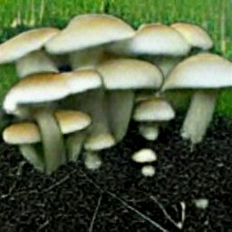

The Restorative Power of Growing Mushrooms
by allmushroom
Posted on 26-10-2022 10:18 PM

Reishi (ganoderma lucidum) used for over 2,000 years in traditional chinese medicine, reishi is known as the mushroom of immortality because of its purported anti-aging and immune boosting powers. 
Stephanie collins posted 7 years ago we have a water reserve tank for rain water its gravity feed. Eliminating lawn size would be counter productive as our yard is part of a working farm. We do not water the grass, it just keeps growing,,, we had some chickens at one time. They have a lot of nitrogen in their waste and tend to reduce the grass size. Unfortunately the coyote like to eat the chickens. The pastures contain cattle they love to eat grass and have their own well. I would love to have some goats to keep the front yard manicured(seriously).
As you can see, mushrooms are a true health powerhouse for the human body. That’s why we’ve made an easy-to-follow mushroom protocol to enhance your overall circadian system and improve sleep. This helps you achieve deeply restorative sleep states and leaves you feeling energized throughout the day. The protocol uses reishi at night with lion’s mane and cordyceps in the morning to stabilize and support healthy biorhythms.
Growing Mushrooms in the Garden: The King Oyster
Price: $19. 93 shop now at amazon from amazon back to the roots was started by two friends in college when they learned it was possible to grow mushrooms from plain old coffee grounds. Since then, they’ve launched into the urban garden market with a number of great at-home products including this organic mushroom growing kit. In just ten days, you can grow delicious, gourmet oyster mushrooms right out of the box in just ten days.

Growing edible mushrooms outside can be incredibly easy and inexpensive, sometimes easier than growing vegetables! you don’t need a green thumb or any special equipment to incorporate this nutrient-dense food into your backyard or garden. Check out this video to see how chuck from shady grove farm makes his outdoor mushroom beds! to download our mushroom beds pamphlet, click here. The mushroom bed method is perfect for people wanting to grow mushrooms at home , who don't want a huge investment and are looking for a fast return on their work. The benefits of growing outside are almost innumerable. Not only does it provide a cost-effect supply of healthy and delicious food , but you’ll also be able to access species not commercially available while improving the quality of your soil- a big bonus for gardeners!.
By steve nicolini growing oyster mushrooms is fun, simple and a great addition to many gardens, yards, and any permaculture-oriented sustainable homestead. As gardeners we often like to grow flowers, veggies, and maybe fruit. We mulch our garden beds with straw or wood chips to retain moisture. We might use logs for a naturalistic edging. The plants grow in the soil, but what grows in the mulch or the edging? mushrooms!.
Yes. Though it depends on what type of mushroom you want to grow and how much dedication you have. The growing conditions for mushrooms can vary widely from species to species, and some aren’t really viable at a small scale. You aren’t going to be growing morels or black truffles —there’s a reason those are so expensive. Still, other types, like oyster mushrooms, maitakes, and reishi are all within the realm of possibility. Pretty much every mushroom growing resource i could find says that oyster mushrooms are the easiest variety for first time-growers, as they grow fast and can easily thrive in substrates made of things like coffee grounds and straw, making them relatively low maintenance.
Step 1: Select an Area for your mushroom garden
Growing mushrooms outside in the garden can be integrated with your soil improvement regime, as a mycelium rich soil has many benefits. I decided to use it on the bare areas of sand exposed by our pond building. One can take the benefits even a step further by taking our processing from food to humanure and then composting which i’ve maintained for years, and closing up the cycle bringing the end back to the beginning, creating food directly on composted humanure and moving a step further into independence.
Growing mushrooms in logs is a great option for gardeners who have access to woody areas or who are growing mushrooms to sell. Freshly cut trees like an oak in late winter are a good choice. You may find that starting the inoculation in the spring will also bring about the best results for this delicious fungi. Growers need to start with a recently felled log. As strange as it may seem, this is a crucial step. It’s important to use a freshly cut log or branch about 3-6 inches in diameter and not a log that has been sitting for longer than two weeks.
Growing your own mushrooms at home is simple, easy, and rewarding! there are many ways to bring fun fungi into your garden and kitchen, and one method that seeds recently adopted is a mushroom bed. Follow these step by step instructions and you’ll be on your way to three seasons full of delicious mushrooms to enjoy. Step 1: pick a shady area of your yard so that the bed doesn’t dry out and stays cool. Our bed is situated in the garden under the shade of a large tree.
Mushrooms are fun to forage in the woods and can easily be grown in a garden space. They are typically grown on logs stacked in a lean-to position, or in bags of straw or sawdust. We place them in shady, well-ventilated areas and hope they do their thing. In the late 90’s i was the assistant manager at a gourmet mushroom farm in adams county, ohio. We grew a variety of oyster and shitake mushrooms for restaurants and select stores. I learned all about the latest ways to grow mushrooms – or so i thought.
Growing Pink Oyster Mushrooms At Home (Easy Backyard Grow)
Popular mushrooms like shiitake, oyster, maitake, enoki and morel are cultivated both commercially and at home by backyard enthusiasts. In the wild, these mushrooms are typically found growing near or on oak, alder, birch, elm and ash trees where specially trained pigs or dogs find dig them out. Farms growing mushroom trees inoculate oak, alder, birch, elm and ash sawlogs with shiitake, oyster, maitake, enoki and morel mushroom spores for cultivation. An oak, alder, birch, elm and ash tree planted in the backyard will provide mushrooms for a family of four without much of a problem.
Image by tuned_in homegrown mushrooms allow you to enjoy these fungi anytime in your own home. The best variety for home growing is oyster mushrooms , though you can use any type. Store bought mushroom propagation is quite easy, but you should choose fungi from organic sources. Propagating store bought mushrooms from the ends just requires a good fruiting medium, moisture and the proper growing environment. Read on to learn how to grow mushrooms from ends.
Outdoor spaces plants vegetables growing mushrooms is something lots of us want to do, but figuring out how to do it can be a challenge. There are lots of edible mushroom varieties to choose from, and many of them have very specific growing requirements that can be difficult to replicate at home. Fortunately oyster mushrooms are not as picky as most other types. With easy to find supplies, following a few simple steps, you can grow your own mushrooms at home.
If you are looking to grow some good quality mushrooms at home, then investing in this best mushroom growing kit is definitely something you should do since it helps to control the temperature inside the box, and there are not too many external elements that will disturb this growing process. This easy-to-use mushroom kit is highly recommended if you are looking for oyster mushrooms that you can grow indoors without too much of a hassle.
Log cultivation overview a wide variety of edible mushroom species can be grown outdoors on hardwood logs. Fungus is introduced via plug or sawdust spawn and in a period that ranges from 6 to 12+ months, the fungus fully colonizes the logs. A similar process would occur naturally on a fallen tree, but this would normally take much longer and could involve several species of fungi, all in competition to colonize the log. Oyster mushroom logs will produce a significant yield of mushrooms as early as 12 months from inoculation, whereas shiitake can take closer to 18 months. A medium sized log could fruit for 5+ years if properly cared for.
As mentioned in the guide, some of the most popular p. Cubensis strains (or varieties) for beginners are the b+ and golden teacher mushrooms. Experienced growers may prefer penis envy. However, as with your choice of substrate, the best cubensis strain for you will depend on your priorities for cultivating mushrooms. See here and here for more information.
Mushroom grow kits are a great idea for their ease of use and overall simplicity. Many beginner growers who don’t wish to manage their own grow from scratch enjoy that there are fewer steps involved, and quicker times until harvest. However, there are some potential downsides to consider with grow kits. Many mushroom growers argue that starting from scratch will be less expensive than grow kits in the long run, since buying materials in bulk tends to be cheaper. This may not be a problem if you just want to have a small amount for a special occasion. But grow kits offer less control over the overall growth process.
While growing mushrooms seems like an incredibly niche pastime, there is an enormous community of amateur mushroom growers out there, especially if you look online. By connecting with others, you can get tips you might never have thought of, celebrate successes, and have a shoulder to cry on just in case you have trouble of one sort or another with your crops.
Be sure to also see this 66thLondon post as well.